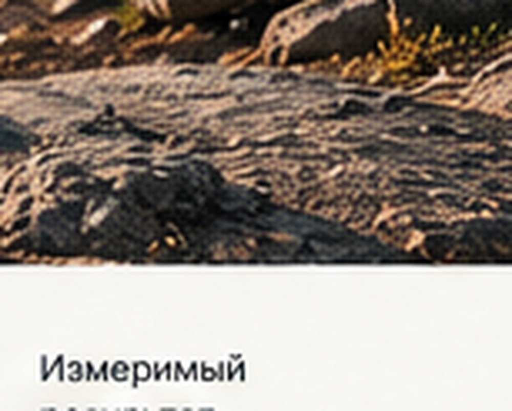
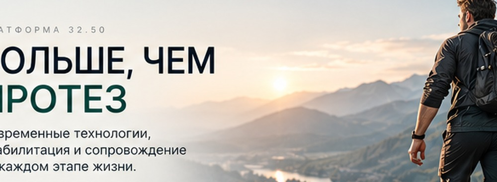
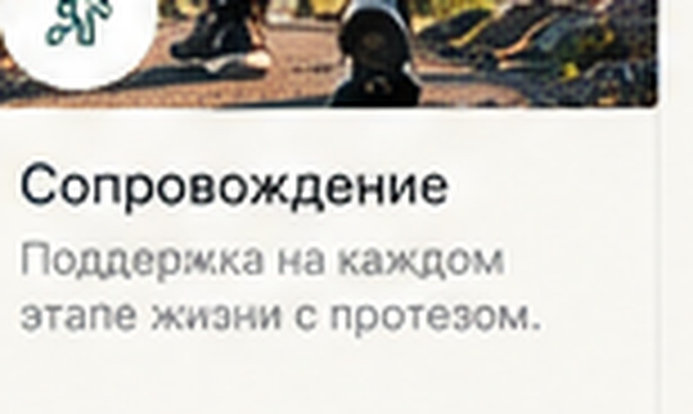
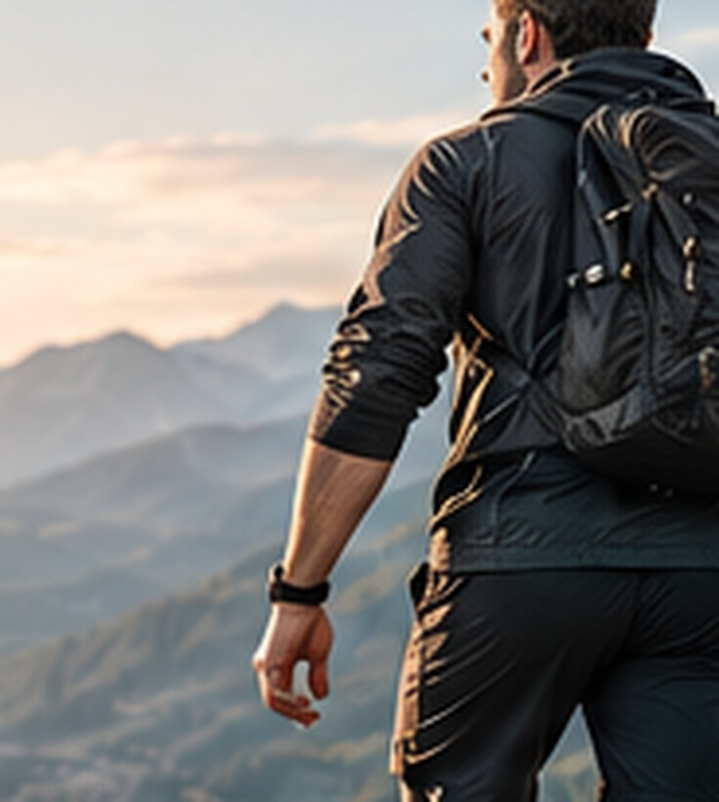

01 · Подбор
Протезирование
Индивидуальный подбор решения с учётом повседневных задач, активности и рекомендаций профильных специалистов.
Подробнее ↗Современные решения для протезирования, реабилитации и сопровождения на каждом этапе жизни.
лет опыта*
пациентов*
рекомендуют нас*
внимание к человеку
* Демонстрационные значения — заменить подтверждёнными данными компании до публикации.

Помогаем разобраться в возможностях, подобрать подходящее решение и понять дальнейший маршрут.

Индивидуальный подбор решения с учётом повседневных задач, активности и рекомендаций профильных специалистов.
Подробнее ↗
Поддержка в освоении протеза и постепенной адаптации в рамках доступных программ и услуг.
Подробнее ↗
Понятная коммуникация и помощь на согласованных этапах использования решения.
Подробнее ↗Состав услуг и медицинские формулировки необходимо согласовать с фактической деятельностью организации.
Технология важна тогда, когда помогает человеку двигаться к собственным целям. Поэтому в центре нашей коммуникации — человек, его запрос и реальные возможности.
О платформе ↗Обсудить потребности, цели и ограничения.
Получить понятное объяснение доступных решений.
Следовать согласованному плану и рекомендациям специалистов.
Без фантастических обещаний: внимание к конструкции, материалам, настройке и индивидуальным задачам.
Показываем изделия и технологические решения корректно, а сложные особенности объясняем понятным языком.
О технологиях ↗Раздел для реальных историй пользователей, которые можно публиковать только с их согласия.
Место для истории пользователя: его цели, опыт и выводы после адаптации.
Как выглядит сопровождение и какие вопросы можно обсудить со специалистом.

Пример будущего материала о повседневных задачах и достижениях.
Карточки — шаблоны контента, а не реальные отзывы или подтверждённые истории.
Оставьте контакт — команда сможет связаться с вами после подключения формы к рабочей системе.
Перед публикацией укажите реальные контакты, адреса, сведения об организации и порядок обработки обращений.